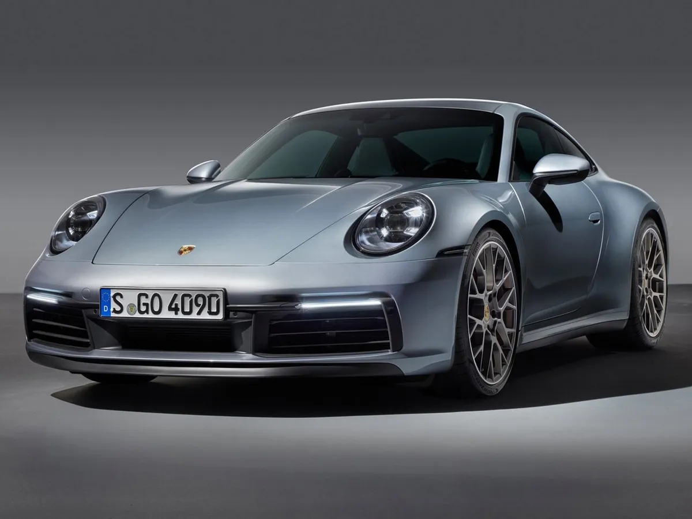
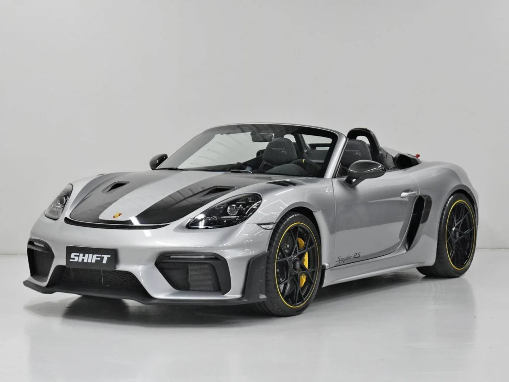
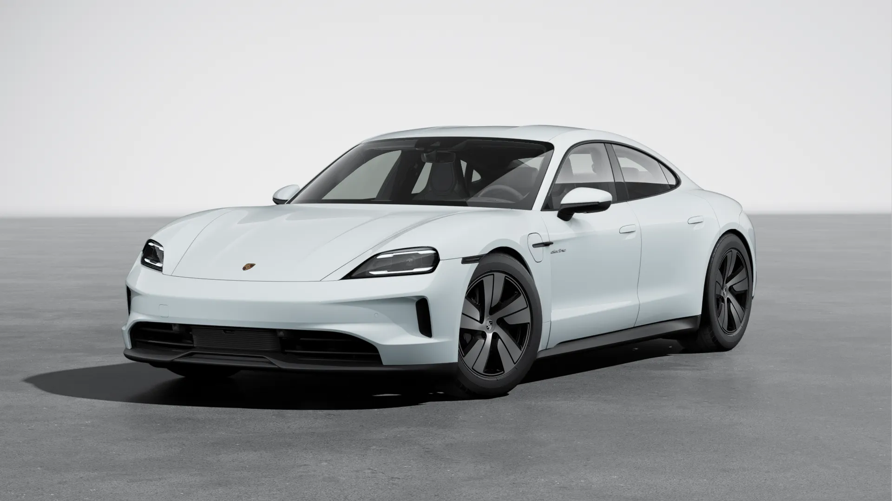
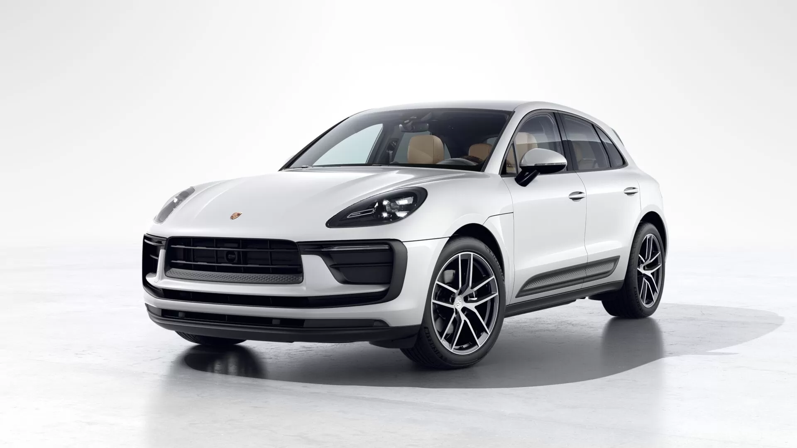
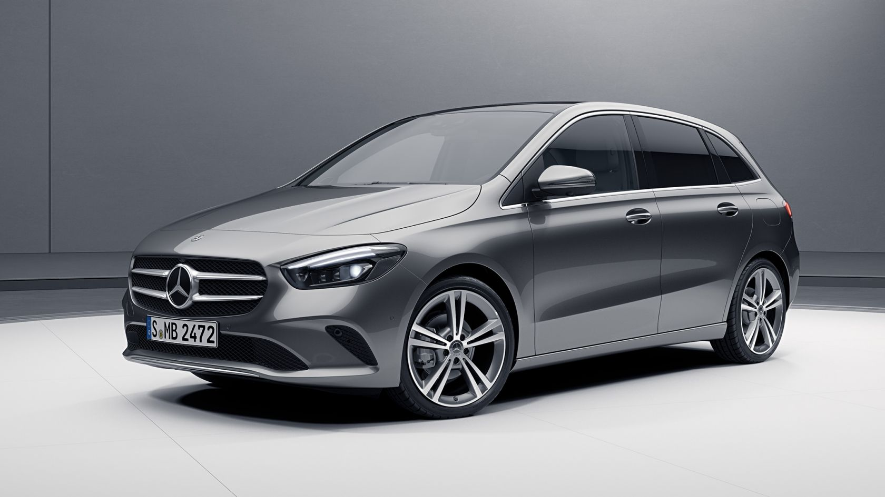
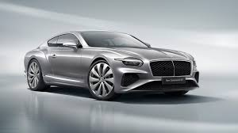
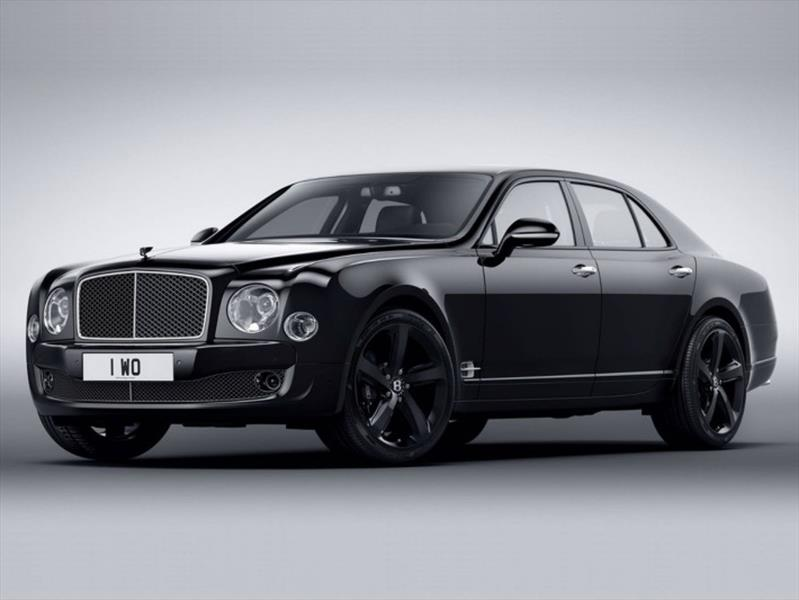

Sobre Nosotros
En Auto Force, somos apasionados por el mundo automotor y estamos comprometidos con brindar a nuestros clientes una experiencia excepcional en cada paso del camino. Desde nuestra fundación, nos hemos dedicado a ofrecer vehículos de alta calidad, un servicio transparente y un acompañamiento personalizado para ayudarte a tomar la mejor decisión al elegir tu auto.
Nos especializamos en una amplia gama de vehículos —desde autos familiares hasta deportivos y utilitarios— seleccionados cuidadosamente para garantizar seguridad, rendimiento y confort. Trabajamos con marcas reconocidas y ofrecemos opciones tanto nuevas como seminuevas, siempre con estándares de calidad rigurosos.
Nuestro equipo está formado por profesionales con años de experiencia en el sector automotriz, listos para asesorarte con honestidad, conocimiento y cercanía. Creemos en construir relaciones duraderas basadas en la confianza, la transparencia y la satisfacción total de nuestros clientes.
En Auto Force, no solo vendemos autos. Creamos experiencias, conectamos personas con sus metas y acompañamos tu camino desde el primer kilómetro.
PORSCHE
Porsche 911

El Porsche 911 es más que un simple coche deportivo; es un símbolo de prestigio y rendimiento. Su diseño clásico, que ha evolucionado suavemente a lo largo de los años, se mantiene reconocible y atractivo. La combinación de un motor trasero de alto rendimiento, un chasis rígido y un manejo preciso, hace del 911 una experiencia de conducción inigualable
Porsche Spyder 500 718

El Porsche 718 Spyder 500 es un roadster descapotable de alto rendimiento con motor central, diseñado para ofrecer una experiencia de conducción pura y sin compromisos. Su motor bóxer de 4.0 litros, 6 cilindros, desarrolla 500 CV (368 kW) a 8,400 rpm, con un par máximo de 450 Nm a 6,750 rpm. El 718 Spyder RS es el Porsche 718 descapotable más rápido de todos los tiempos, alcanzando una velocidad máxima de 308 km/h y acelerando de 0 a 100 km/h en 3.4 segundos.
Porsche Taycan

El Porsche Taycan es un vehículo deportivo eléctrico de alto rendimiento, que se destaca por su diseño aerodinámico, su avanzada tecnología y su potente motor eléctrico. Ofrece diferentes versiones, como el Taycan 4S, Turbo y Turbo S, con diversos niveles de potencia y autonomía.
Porsche Macan

El Porsche Macan es un todoterreno de lujo compacto, desarrollado por Porsche y que se sitúa debajo del Cayenne en la gama de la marca. Es conocido por su diseño deportivo, rendimiento potente y manejo ágil, con una amplia gama de opciones de motor y equipamiento.
Mercedes
Mercedes clase A (2020)

El Mercedes-Benz Clase A es un vehículo compacto con una mezcla de diseño deportivo, potencia y confort, ofreciendo una experiencia de conducción premium. El Clase A se ofrece tanto en formato hatchback como sedán, y puede ser equipado con una amplia gama de motores de gasolina y diésel. Su interior destaca por su tecnología avanzada, incluyendo el sistema MBUX y la iluminación ambiental.
Mercedes clase B

El Mercedes-Benz Clase B es un monovolumen compacto (MPV) que se caracteriza por su versatilidad, espacio interior y diseño elegante, siendo una opción atractiva para familias y personas que buscan un vehículo práctico y cómodo. Ofrece una experiencia de conducción suave y eficiente, con una variedad de motores gasolina y diésel, así como opciones de tracción delantera y 4Matic.
Mercedes clase C

El Mercedes-Benz Clase C es un vehículo compacto ejecutivo de lujo, disponible en versiones sedán y familiar. Se caracteriza por su diseño elegante y deportivo, su interior refinado y sus avanzadas tecnologías. La Clase C ofrece una variedad de motores, incluyendo versiones híbridas enchufables, que brindan eficiencia y rendimiento.
Mercedes clase E

El Mercedes-Benz Clase E es un sedán de lujo del segmento E, conocido por su combinación de lujo, confort y tecnología. Es un vehículo que se posiciona entre el Clase C más pequeño y el Clase S más grande, ofreciendo una experiencia de conducción refinada y con diversas opciones de motorización, incluyendo versiones híbridas y gasolina.
BENTLEY
Bentley Continental GT

El Bentley Continental GT es un coche deportivo de lujo, conocido por su elegancia, potencia y artesanía excepcional. Se ofrece en versiones de cupé y descapotable, con opciones de motor V8 y W12, incluyendo versiones híbridas y Supersports. Su interior está adornado con cuero de alta calidad, madera y detalles artesanales, con tecnología de vanguardia para una experiencia de conducción conectada y refinada
Bentley Bentayga

El Bentley Bentayga es un SUV de lujo de gran tamaño que combina rendimiento de alto nivel con artesanía y lujo excepcionales, ofreciendo una experiencia de conducción única
Bentley Mulsanne

El Bentley Mulsanne es un automóvil de lujo con una larga historia y una reputación por su confort, estilo y rendimiento. Es una berlina de 4 puertas que ofrece una experiencia de conducción única, gracias a su motor potente, su interior lujoso y su manejo preciso.
Bentley Flying

El Bentley Flying Spur es un sedán de lujo británico, conocido por su combinación de potencia, confort y exclusividad. Se caracteriza por su diseño elegante, su interior lujoso y su rendimiento excepcional